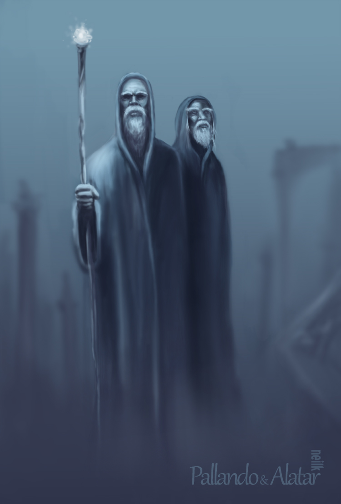

The Blue Scribes
They are two of the five Wizards (or Istari) sent by the Valar to Middle-earth to aid in the struggle against Sauron. They are called the Blue Wizards on account of their sea-blue robes (each of the other Istari had robes of a different color), and their individual names are given in the Unfinished Tales as Alatar and Pallando. They were both sent to the distant east of Middle-earth, and therefore played no role in the events of the west of Middle-earth, as described in The Lord of the Rings. Consequently, little is known about them.